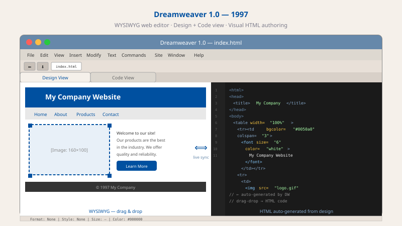

1997
Dreamweaver 1.0, WYSIWYG 웹 편집기의 상징
“그냥 드래그했는데 HTML이 따라오네!” Dreamweaver는 디자이너와 개발자가 한 화면을 공유하게 만들었습니다.

1990년대 후반, 웹사이트를 만든다는 건 상상 이상으로 고된 일이었습니다. 메모장 같은 텍스트 편집기를 열고 <table border="1" cellspacing="0" cellpadding="5"> 같은 HTML 코드를 한 글자씩 직접 쳐야 했어요. 이미지 위치 하나 옮기려고 코드 한 줄 고치고, 브라우저로 새로고침해 확인하고, 마음에 안 들면 또 고치고... 디자이너는 손도 못 댔습니다. "코드를 모르면 웹사이트를 못 만든다"는 게 상식이었거든요.
매크로미디어(Macromedia)의 한 엔지니어는 이렇게 생각했습니다. "잠깐, 워드 프로그램은 글자만 쳐도 자동으로 보기 좋게 만들어주잖아. 그럼 웹페이지도 마우스로 끌어다 놓으면 컴퓨터가 알아서 HTML 코드를 만들어주면 안 될까?"
그렇게 해서 1997년 Dreamweaver가 탄생했습니다. 디자이너가 이미지를 화면에 끌어다 놓으면 옆 창에 HTML 코드가 자동으로 짜여 나왔어요. 광고 에이전시의 한 디자이너는 처음 써본 후 감탄했습니다. "제가 그림 그리는 것처럼 페이지를 만들었는데, 결과물이 진짜 웹사이트로 작동해요!" 개발자는 옆에서 자동 생성된 코드를 보며 미세 조정만 하면 됐죠. 디자이너와 개발자가 처음으로 같은 화면을 보며 협업할 수 있게 된 순간이었습니다.
이 "코딩 없이 웹사이트 만들기" 사상이 오늘날 어떤 결과를 가져왔을까요? 워드프레스, 노션, 윅스, 카카오 브런치, 네이버 블로그 — 여러분이 코드 한 줄 모르고도 블로그를 만들거나 자영업자가 직접 가게 홈페이지를 꾸밀 수 있는 모든 도구가 1997년 Dreamweaver에서 시작됐어요. "기술이 사람을 가르는 게 아니라, 누구나 쓸 수 있어야 한다"는 생각의 첫걸음이었습니다.
Dreamweaver는 시각 편집과 코드 뷰를 결합해, 비개발자도 웹 제작에 참여할 수 있게 했습니다. 이 경험은 이후 웹 IDE가 시각화 기능을 제공하는 계기가 되었습니다.